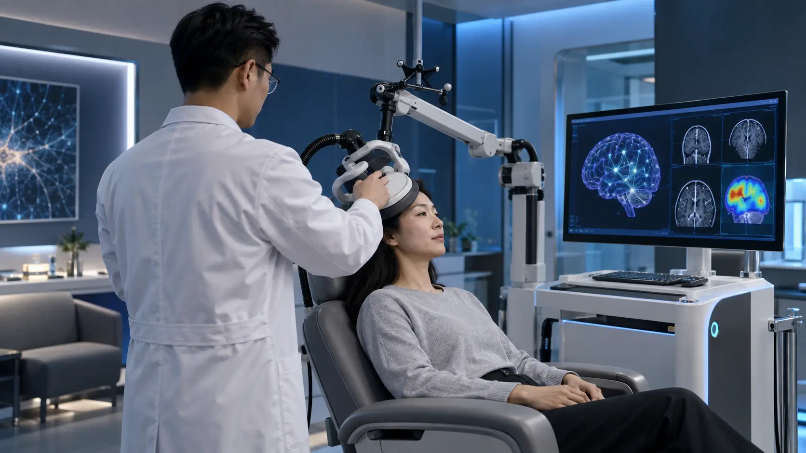
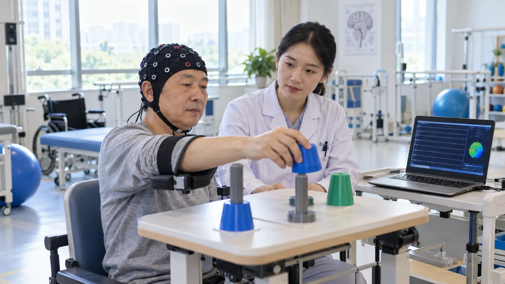

看见网络
构建个体结构—功能—电生理图谱
个体脑网络，是精准神经调控真正的坐标系。
BrainSteer 把数据、算法、设备与结果连成同一条证据链。
构建个体结构—功能—电生理图谱
让每个候选点都有环路证据
在实施前比较方向、剂量与覆盖
让每次结果都反馈到下一次决策
复杂计算留在系统内部，关键判断以清晰证据呈现。临床人员、科研人员和工程团队在同一病例空间中协同。
影像、靶点、通路、刺激场与设备位姿落在同一坐标体系。
推荐结果关联个体数据、疾病环路、模型版本与循证来源。
参数、质量控制、操作记录与随访结果自动沉淀为病例资产。
从单中心科研工具到多设备临床平台，BrainSteer 以模块化能力适配不同组织的真实工作流。
在统一病例空间中完成影像检查、靶点评估、刺激参数比较与过程记录，为多学科讨论提供共同视图。
输出：病例工作区 · 靶点报告 · 导航计划 · 随访对比
点击模块，查看从开源底座到 BrainSteer 自研核心的完整技术链。
Evidence → Circuit → Simulation → Clinical Review → Real-world Learning
解决“调得准”
解决“为什么调这里”
解决“未来还能调哪里”
生物学合理性 · 影像一致性 · 循证强度 · 可刺激性 · 安全性 · 商业与临床可落地性
用患者头模比较靶点、角度、强度与状态变化，再交由医生复核。

交互结果仅用于解释 BrainSteer 的产品逻辑，不代表真实患者计算或临床建议；最终方案由专业人员在验证与注册范围内确认。
一条临床线，一条计算线；全程同病例、同坐标、同证据。
从单台工作站开始，逐步连接科室、设备与多中心网络。
PACS / DICOM · BIDS · TMS / DBS / tFUS · API
QC → 网络 → 靶点 → 仿真 → 导航

随访 → 剂量映射 → 机制分析 → 下一方案
同一病例空间，按疾病、环路与设备切换工作流。
在个体皮层形态上定位左侧前额叶候选靶点，结合 DLPFC–sgACC 功能关系、白质通路与电场覆盖，形成可解释的刺激计划。
IMAGE → NETWORK → TARGET → REVIEW → GUIDE → FOLLOW-UP
系统级整合，而非单点工具。
从“某个点在哪里”升级为“该点连接什么、调节什么、证据是什么”。
在一个个体空间中融合连接组、疾病网络与物理刺激覆盖。
面向 TMS、DBS、tFUS、tES/TI 与 BCI，不被单一硬件锁定。
对数据、模型、推荐、执行和结果逐层留痕，支持复核与复现。
适配医院数据边界、科研算力与本地硬件，支持渐进式落地。
成熟开源生态与自研核心模块协同，通过 API 快速接入现有系统。
图中分值仅把各品牌官网公开强调程度映射为 1–5 级，用于理解产品定位，不代表性能测试、认证状态或临床优劣。
| 公开定位 / 能力方向 | BrainSteer | Brainlab | Quicktome | Advantis | Synaptive | Medivis | ImeKa | Xijia | QMENTA |
|---|---|---|---|---|---|---|---|---|---|
| 核心场景 | 神经调控闭环 | 手术 / 放疗 | 连接组手术 | 高级 MRI | 手术套件 | AR 手术导航 | 白质影像 | 脑图谱 / 导航 | 影像研究 / 试验 |
| 个体连接组 | ● | ◐ | ● | ◐ | ● | ○ | ● | ● | ◐ |
| 环路靶点决策 | ● | ◐ | ◐ | ○ | ◐ | ○ | ○ | ◐ | ○ |
| 刺激场 / 声场仿真 | ● | ◐ | ○ | ○ | ◐ | ○ | ○ | ◐ | ○ |
| 实时空间导航 | ● | ● | ◐ | ○ | ● | ● | ○ | ◐ | ○ |
| 多调控设备 TMS / DBS / tFUS / tES / BCI | ● | ◐ | ○ | ○ | ◐ | ○ | ○ | ◐ | ○ |
| 治疗—随访—再决策闭环 | ● | ◐ | ◐ | ◐ | ◐ | ○ | ◐ | ◐ | ◐ |
| 科研 × 临床 × 设备开放集成 | ● | ◐ | ◐ | ◐ | ◐ | ◐ | ◐ | ◐ | ● |
基于 2026 年 9 月各品牌官网公开定位的方向性比较；“非官网重点”不代表绝对缺失。功能、地区版本与注册范围可能变化。BrainSteer 列为产品设计方向，实际能力以验证及注册版本为准。
计划效率 · 决策一致性 · 导航误差 · 靶点参与度 · 临床结局 · 安全性
不先写百分比，先定义终点。
个体连接引导与电场建模已在神经调控研究中显示潜在临床价值；它们构成 BrainSteer 的验证依据，而非 BrainSteer 已证实疗效。
以上为预期改进方向与建议验证框架，不构成临床疗效承诺。真实效果需通过前瞻性、多中心研究，并以适用法规与注册范围为准。
依托神经影像智能理解实验室（NIMG）在白质纤维束、脑微结构、功能网络与医学影像 AI 方向的持续研究，BrainSteer 将科学问题转译为产品能力。
理解刺激传播所依赖的结构通路
→ 连接组与脑图谱从局部脑区走向结构—功能耦合
→ 个体网络数字孪生从统计关联走向可干预假设
→ 可解释靶点推荐把科学发现转化为真实操作系统
→ BrainSteer 闭环以模块化产品降低初次部署门槛，以真实病例闭环持续形成算法、流程和数据壁垒。
本地化工作站、平台订阅、专项场景模块与技术服务。
标准流程 + 病例资产SDK、算法授权、联合解决方案与硬件适配服务。
智能软件层 + 产品差异化研究平台、多中心协作、算法插件与数据分析服务。
快速验证 + 可复现研究影像生物标志物、受试者分层与疗效机制探索。
量化终点 + 试验洞察每一步都以可复现流程、明确终点和临床专家复核为前提。
围绕抑郁场景贯通影像质控、靶点排序、场仿真、导航与随访。
SINGLE-CENTER PILOT复用连接组、坐标和报告底座，适配 DBS、tFUS、tES 与 BCI。
MODULAR INTEGRATION用效率、精度、一致性、靶点参与、临床结局和安全性评估价值。
MEASURABLE ENDPOINTS形成科室工作站、医院私有化平台及面向设备企业的 SDK / OEM 能力。
HOSPITAL · DEVICE · RESEARCH面向医院、高校、神经调控设备企业与产业伙伴，开展场景验证、模块共研、设备集成和成果转化。
围绕抑郁、帕金森病、癫痫、认知障碍与脑卒中等场景，共建连接组导航和疗效评估方案。
为 TMS、DBS、tFUS、tES/TI 与 BCI 产品提供影像、靶点、仿真和导航能力。
联合验证前沿方法，建设疾病环路模型、可复现数据管线和智能决策模块。
推进样机验证、示范中心、区域落地与国产化替代，共建长期产品生态。